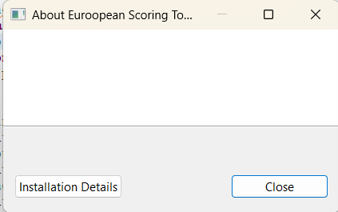

Si vous lisez ces lignes, c’est que vous avez déjà trouvé le chemin de l’aide : le menu Aide, puis Contenu de l’aide. C’est le point d’entrée de cette documentation, disponible à tout moment pendant l’utilisation de l’outil, sans connexion Internet.
Cette aide est décomposée en trois partie distinct :


L’aide est installée avec l’outil et s’ouvre dans une fenêtre dédiée, ou dans une vue de l’application selon la configuration. Elle décrit les principes de l’outil, ses éditeurs, ses vues et ses fonctions de saisie. Comme elle est livrée avec l’application, elle correspond toujours à la version que vous utilisez.
La fenêtre d’aide est organisée en deux zones :
Le sommaire, à gauche, présente les chapitres sous forme d’arborescence. Un clic sur un titre ouvre la page correspondante.
Le contenu, à droite, affiche la page sélectionnée. Les liens permettent de passer d’une page à une autre, et les boutons de navigation de revenir en arrière ou d’avancer, comme dans un navigateur.
Il est possible d'effectuer une recherche pour de trouver rapidement une page à partir d’un mot ou d’une expression, sans parcourir tout le sommaire. Les résultats sont classés par pertinence, et un clic sur un résultat ouvre la page concernée.
Il est possible d’ajouter une page aux favoris de l’aide, pour la retrouver plus vite, et d’imprimer la page affichée si l’on souhaite disposer d’une version papier.